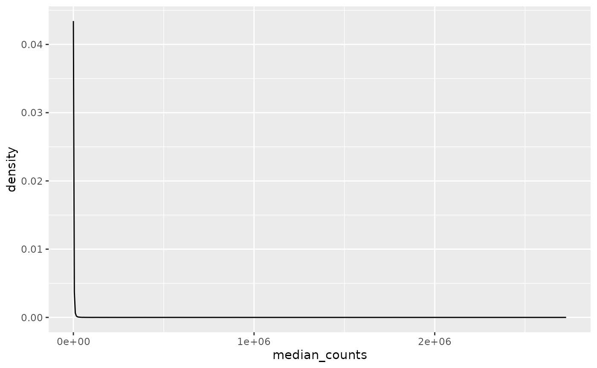
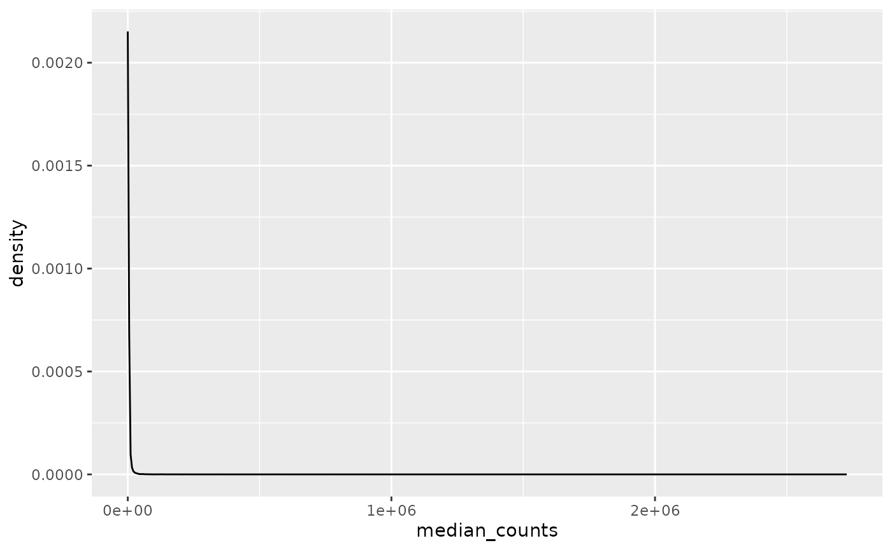
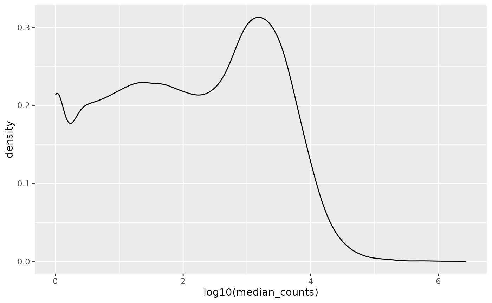

Exploratory Data Analysis
explore.RmdGene Expression
Let us start by loading the gene expression in long format, i.e. one row per gene × sample combination.
library(ggplot2)
library(dplyr)
library(OSD758)
(counts <- gene_expression())
#> # A tibble: 1,989,400 × 4
#> sample_id ensembl_gen_id gene_symbol counts
#> <chr> <chr> <chr> <int>
#> 1 MHU-8_RTN_FLT_FLT02 ENSMUSG00000000001 Gnai3 2132
#> 2 MHU-8_RTN_FLT_FLT02 ENSMUSG00000000003 Pbsn 0
#> 3 MHU-8_RTN_FLT_FLT02 ENSMUSG00000000028 Cdc45 109
#> 4 MHU-8_RTN_FLT_FLT02 ENSMUSG00000000031 H19 29
#> 5 MHU-8_RTN_FLT_FLT02 ENSMUSG00000000037 Scml2 92
#> 6 MHU-8_RTN_FLT_FLT02 ENSMUSG00000000049 Apoh 22
#> 7 MHU-8_RTN_FLT_FLT02 ENSMUSG00000000056 Narf 3614
#> 8 MHU-8_RTN_FLT_FLT02 ENSMUSG00000000058 Cav2 3464
#> 9 MHU-8_RTN_FLT_FLT02 ENSMUSG00000000078 Klf6 2464
#> 10 MHU-8_RTN_FLT_FLT02 ENSMUSG00000000085 Scmh1 2779
#> # ℹ 1,989,390 more rowsMost expressed genes
Calculating median counts per gene:
median_gene_expression <-
counts |>
dplyr::group_by(ensembl_gen_id, gene_symbol) |>
dplyr::summarise(median_counts = median(counts), .groups = "drop") |>
dplyr::arrange(desc(median_counts))
median_gene_expression
#> # A tibble: 56,840 × 3
#> ensembl_gen_id gene_symbol median_counts
#> <chr> <chr> <int>
#> 1 ENSMUSG00000030324 Rho 2727317
#> 2 ENSMUSG00000118841 Rn7s2 1778641
#> 3 ENSMUSG00002076161 Rn7sk 1516195
#> 4 ENSMUSG00000092837 Rpph1 901160
#> 5 ENSMUSG00000034837 Gnat1 773424
#> 6 ENSMUSG00000118866 Rn7s1 588929
#> 7 ENSMUSG00000041534 Rbp3 566448
#> 8 ENSMUSG00000092341 Malat1 553265
#> 9 ENSMUSG00000029064 Gnb1 537503
#> 10 ENSMUSG00000023978 Prph2 397989
#> # ℹ 56,830 more rowsThe mostly expressed gene is rhodopsin (Rho) with a median of over 2.7 million reads, perhaps not so surprising given that these RNAseq samples are from retina.
Not expressed genes
On the contrary we have also genes that are not expressed at all. Actually, one-third of all genes (19,028) show no expression whatsoever in mouse retina:
total_gene_expression <-
counts |>
dplyr::group_by(ensembl_gen_id, gene_symbol) |>
dplyr::summarise(total_counts = sum(counts), .groups = "drop") |>
dplyr::arrange(desc(total_counts))
total_gene_expression |>
dplyr::filter(total_counts == 0L)
#> # A tibble: 19,028 × 3
#> ensembl_gen_id gene_symbol total_counts
#> <chr> <chr> <int>
#> 1 ENSMUSG00000000003 Pbsn 0
#> 2 ENSMUSG00000000606 Vmn2r88 0
#> 3 ENSMUSG00000000690 Hoxb6 0
#> 4 ENSMUSG00000000701 Tcl1b5 0
#> 5 ENSMUSG00000000938 Hoxa10 0
#> 6 ENSMUSG00000001168 Oas1h 0
#> 7 ENSMUSG00000001656 Hoxc11 0
#> 8 ENSMUSG00000001657 Hoxc8 0
#> 9 ENSMUSG00000001819 Hoxd13 0
#> 10 ENSMUSG00000001823 Hoxd12 0
#> # ℹ 19,018 more rowsGene expression distribution
The gene expression distribution is extremely skewed as one-third have no expression at all.
median_gene_expression |>
ggplot(aes(x = median_counts)) +
geom_density()
Removing genes with a median expression of zero counts still produces a very skewed distribution.
median_gene_expression |>
dplyr::filter(median_counts != 0) |>
ggplot(aes(x = median_counts)) +
geom_density()
Log-scale transforming the median counts allows to conciliate very low counts with million count values, we can appreciate (roughly) three intervals:
- Below 100 counts
- Between 100 and 10,000 counts
- Above 10,000 counts
median_gene_expression |>
dplyr::filter(median_counts != 0) |>
ggplot(aes(x = log10(median_counts))) +
geom_density()